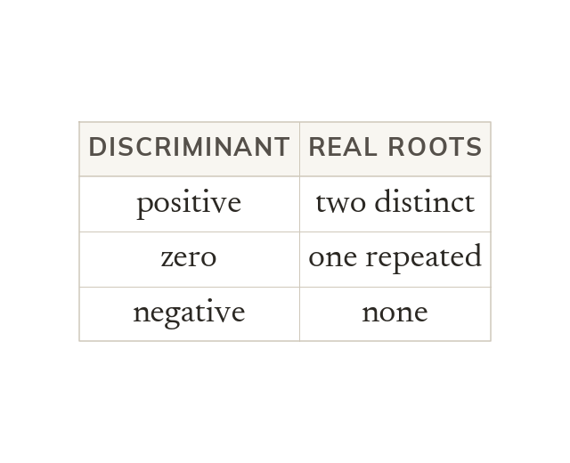
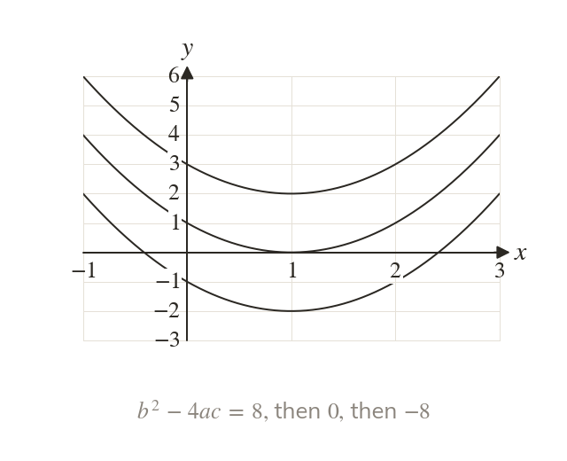
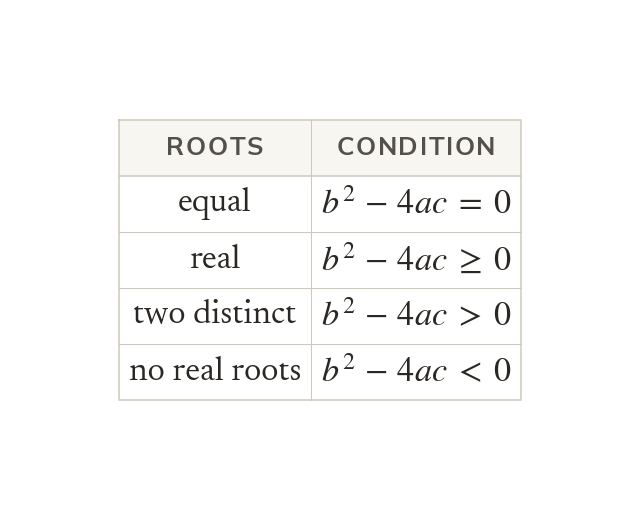
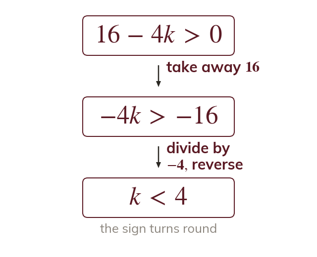
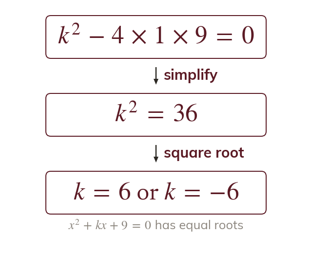

The part under the square root
In the quadratic formula, sits under the square root. Its sign decides how many real roots there are.
One number, says how many real roots a quadratic has before it is solved, and so how many times its graph meets the x-axis. Exam questions turn it round and ask for the constant k that makes the roots equal, real or absent.
Work down the page at your own pace. Write every answer in your book first, then click to check it.
Read each card, then follow the worked examples one step at a time.

In the quadratic formula, sits under the square root. Its sign decides how many real roots there are.

With two real roots the curve crosses the x-axis twice. A zero discriminant means it touches the axis; a negative one means it misses it.
Pick an answer. If it's wrong, the feedback tells you which mistake it was.
Write the blanks in your book first, then tap each one to check.
Read each card, then follow the worked examples one step at a time.

Equal roots need and real roots need
No real roots need

When k is only in c, the condition is a linear inequality in k. Dividing by a negative number reverses the inequality.

When is in b, the condition for equal roots gives equal to a number. Both square roots count.
Pick an answer. If it's wrong, the feedback tells you which mistake it was.
Write the blanks in your book first, then tap each one to check.
Finished? Next lesson: 2.6 Modelling with Quadratics.
For each skill, tap the one that is true for you today. Your Revise pages start with anything you mark Not yet.
Your ratings are saved on this device only.
Log in, then search for a code to practise that skill.